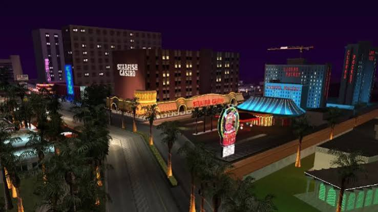

1. Inspiración en Las Vegas
Las Venturas está inspirada principalmente en Las Vegas, una ciudad estadounidense famosa por sus casinos, hoteles lujosos y carteles luminosos. En GTA San Andreas encontramos una versión ficticia llena de luces, apuestas y entretenimiento.
